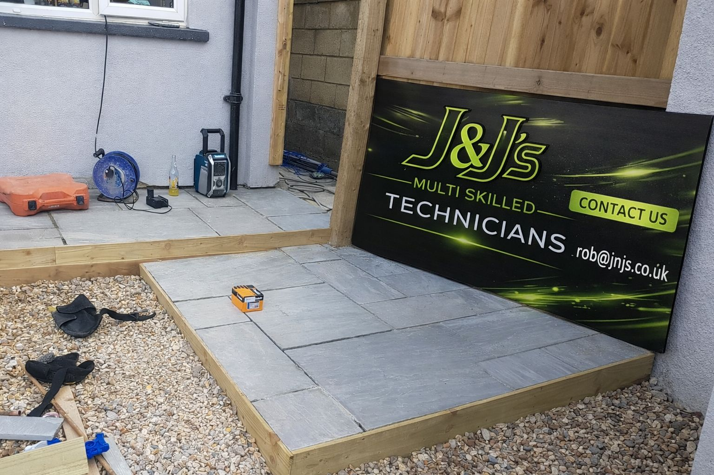
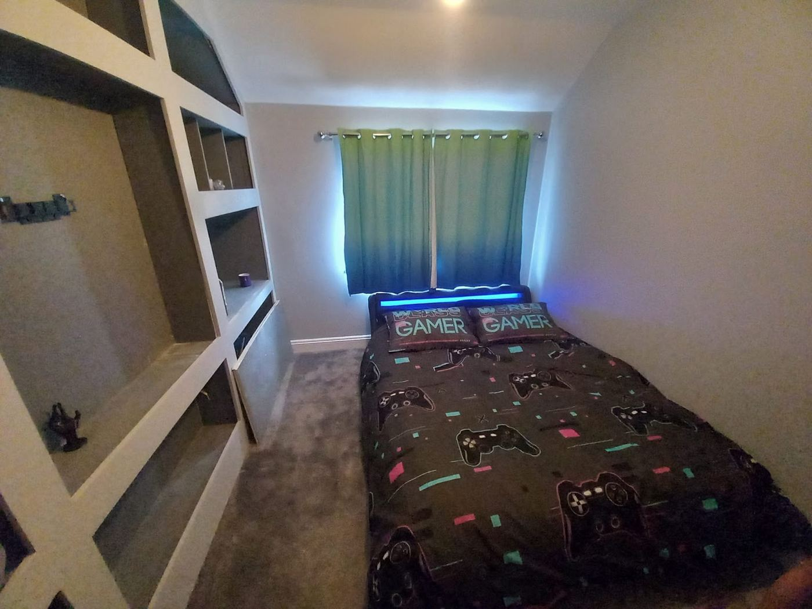
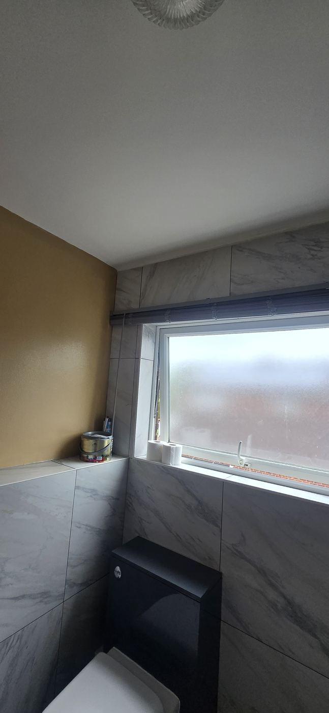

Fitted interiors
Media walls, storage, shelving and built-in features that need clean lines, good planning and a tidy finish.
Fitted interiors / bathrooms / exterior work
J&J's handles practical property work with a hands-on approach, tidy standards and direct communication. From fitted features and bathroom finishes to outdoor upgrades and one-off jobs, the aim is simple: solid work and a clean result.
Why customers call
Some jobs need more than one narrow trade. J&J's is set up for that kind of work, with the flexibility to move between interiors, finishing details, repairs and exterior improvements without losing focus on the end result.
Fitted storage, shelving and media wall work
Bathrooms, tiling and clean finishing details
Exterior upgrades, paving, timber work and site improvements
Repairs, installs and one-off jobs that still need proper workmanship
What we do
Media walls, storage, shelving and built-in features that need clean lines, good planning and a tidy finish.
Tiling, finishing work and bathroom upgrades where detail, neat joins and the final look all matter.
Exterior spaces, boundaries, paving, timber elements and site work that improves how a space works and looks.
For the jobs that do not sit neatly in one box but still deserve clear planning, dependable execution and pride in the finish.
Recent work





How to start
Email the job details, measurements or photos so the conversation starts with real context.
Use the site as the front door, with Facebook still available as the social proof and message channel.
Once the brief is clear, move into scheduling and delivery without the customer hunting around for contact details.
Contact
Email the job details, send over photos or head through to the Facebook page if that is where you already know the brand from.